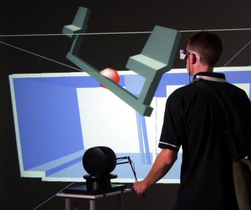
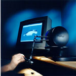
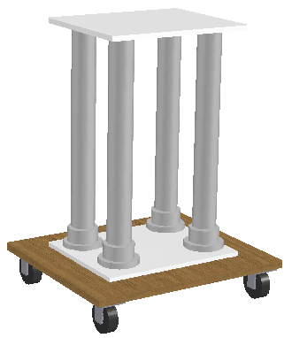
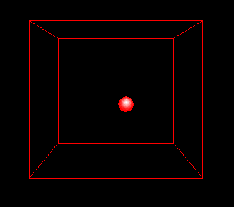
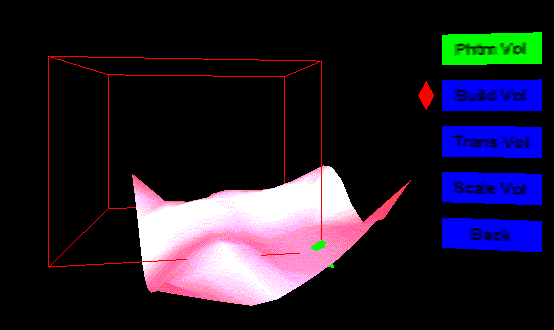
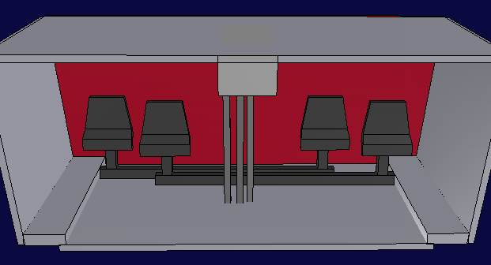

IMPLEMENTING HAPTIC FEEDBACK IN A PROJECTION SCREEN VIRTUAL ENVIRONMENT

Haptic Feedback in the Virtual Environment
OVERVIEW
Haptics refers to the sensing of force, weight, or other physical properties through feeling and touch. The additional information from haptic or force feedback makes certain engineering design tasks, such as part assembly, much easier than using a traditional computer interface. Typically, haptic feedback is combined with virtual reality through a stereo monitor or head mounted display. This research project combined force feedback via the PHANToM haptic device with a projection screen virtual environment, the C6 at Iowa State University, to explore the benefits to engineering design. To achieve this goal several concepts are presented including a stand to hold the PHANToM in the environment, a volume to scale the PHANToM's workspace to the virtual world, and an application to control the PHANToM with the GHOST software. Two example uses for haptic feedback in the virtual environment are presented, a NURBS surface and a virtual assembly application. The assembly example uses Boeing's Voxmap PointShell (VPS) software to produce a much more versatile application than what GHOST is capable of alone.
THE PHANToM
The PHANToM, (Personal HAptic iNTerface Mechanism), was developed at MIT as a relatively low cost force feedback device for interacting with virtual objects. Available through SensAble Technologies, the PHANToM may be programmed with a specialized software developer's toolkit called GHOST. Using GHOST makes the low-level work required to operate the PHANToM transparent to the programmer, allowing him/her to focus on the haptic geometry and properties of the simulation.

The PHANToM
KEY CONCEPTS
To integrate the PHANToM with a projection screen virtual environment several obstacles need to be overcome. First, the PHANToM is essentially a desktop device. To use it in a larger environment the PHANToM must be made mobile and height adjustable to accommodate the user. Second, the PHANToM device's 19x27x37cm physical workspace is much smaller than the virtual environment's 10x10x10ft cube. Some method must exist to make the PHANToM useful over larger portions of the virtual world. Finally, a program must be written to operate the PHANToM and integrate it with the software controlling the virtual environment.
Phantom Stand
The phantom stand was designed to permit positioning, height adjustment, and stable support of the PHANToM in the virtual environment. To avoid interference with the magnetic tracking system used in the environment, the phantom stand was constructed out of bonded PVC plastic and stainless steel hardware.

The phantom stand
Phantom Volume
The phantom volume is a user defined quadrilateral volume of space in the virtual environment that maps motion of the PHANToM's physical endpoint to a position in the virtual world. The phantom volume permits the limited PHANToM physical working volume to be matched an used over an arbitrarily large space in the virtual environment. To create a phantom volume the user selects two points in space with a hand held wand. The orientation of the phantom stand, obtained from a magnetic tracker, is used to orient the volume in space so it matches the PHANToM's orientation. Once the phantom volume is built an example application may be run which allows the PHANToM to interact with the geometry within the phantom volume. A small red sphere represents the virtual PHANToM endpoint position inside the volume.

The phantom volume
Phantom Driver
Integration of the PHANToM's GHOST software and vrJuggler, the software driving the projection screen virtual environment, is handled by the phantom driver program. The phantom driver is a C++ class that uses GHOST to setup and start the PHANToM haptic process, loads the proper haptic geometry, positions the PHANToM in the virtual environment, scales the PHANToM's physical motion to movement in the virtual phantom volume, and communicates with the rest of the simulation.
EXAMPLE APPLICATIONS
In this research two example applications are presented that demonstrate the advantages of using the PHANToM in a projection screen virtual environment: a NURBS surface exploration example and a virtual assembly application that uses Boeing's VPS (Voxmap PointShell) software.
NURBS Surface Example
This example demonstrates using the GHOST software to build the haptic representation of an existing NURBS (Non-Uniform Rational B-Spline) surface from its equations. The geometry is then displayed in the virtual environment where the user may define a phantom volume around and interact with any portion of the surface. This application lets the user experience the additional information about an objects shape through the sense of touch while exploring the differences between the PHANToM physical workspace size and the virtual phantom volume workspace.

NURBS surface
Virtual Assembly Application
In this example the user manipulates the PHANToM in an attempt to install a rudder pedal assembly into the lower front portion of a light aircraft. The haptic feedback provides a fast and intuitive way for a designer to determine if the assembly task can be completed. Boeing's VPS software is used with GHOST to detect collisions between the pedal assembly and the aircraft structure. Physically based modeling is used to calculate the haptic forces resulting from any collisions. GHOST is used to return these haptic forces to the PHANToM. The resulting program is capable of using much more complicated models at haptic feedback rates than GHOST alone.

Rudder pedal assembly model
PUBLICATIONS
Fischer, A. G., and Vance, J. M. 2002,
"Implementing Haptic Feedback
in a Projection Screen Virtual Environment", 7th PHANToM Users Group Workshop
Proceedings, October 26-29, 2002, Santa Fe, NM.
Fischer, A. and Vance, J. M. 2003,
"PHANToM Haptic Device Implemented
in a Projection Screen Virtual Environment", 7th International Immersive
Projection Technologies Workshop and 9th Eurographics Workshop on Virtual
Environments, 2003, Zurich, Switzerland.
Fischer, Andrew G., Implementing Haptic Feedback in a Projection Screen Virtual Environment, M.S. Thesis, Iowa State University, 2002
PERSONNEL
Dr. Judy M. Vance, Professor and Chair, Iowa State University
Andrew G. Fischer, Graduate Research Assistant, Iowa State University
FUNDING
This project was funded by the National Science Foundation Grant # DMI-9872604: Interactive Product Development in a Virtual Environment Utilizing Haptics
FACILITIES
Mechanical Engineering | VRAC | ISU | Home | E-mail | Previous